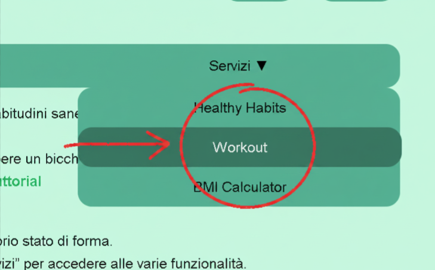
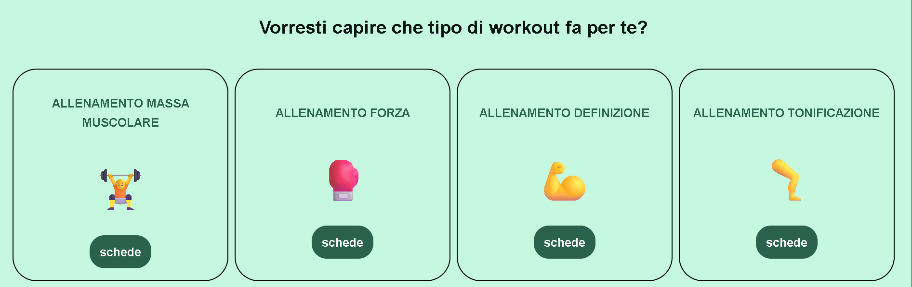

Il sito “Healthy Habits” è una piattaforma dedicata al benessere e alla creazione di abitudini sane nella vita quotidiana.
In breve, le sue principali utilità sono:
Consigli di benessere quotidiano: mostra suggerimenti semplici da seguire, come bere un bicchiere d’acqua appena svegli.
-Sezione “Workout”: offre contenuti legati all’attività fisica e all’allenamento. Tuttorial

Inizia la giornata con energia positiva. Questa sequenza di 20 minuti combina respirazione consapevole e allungamenti dolci per risvegliare corpo e mente.

Inizia la giornata con energia positiva. Questa sequenza di 20 minuti combina respirazione consapevole e allungamenti dolci per risvegliare corpo e mente.